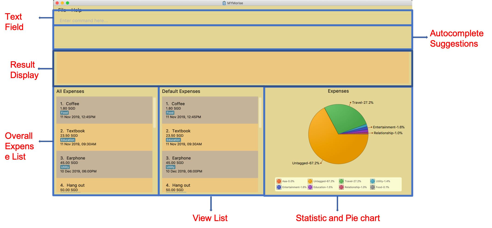

By: Team T14-4 Since: Sep 2019 Licence: MIT
- 1. Introduction
- 2. Quick Start
- 3. Features
- 3.1. Viewing help :
help - 3.2. Listing all expenses in the default expense list :
listDefaultExpenses - 3.3. Listing all budgets in the budget list :
listBudgets - 3.4. Adding an expense:
expense - 3.5. Adding a budget :
budget - 3.6. Viewing a budget :
view - 3.7. Editing an expense :
editExpense - 3.8. Editing a budget :
editBudget - 3.9. Deleting an item :
delete - 3.10. Automatic currency conversion for foreign currencies
- 3.11. Clearing a list :
clear - 3.12. Autocomplete
- 3.13. Retrieve the history of the commands executed:
history - 3.14. Exiting the program :
exit - 3.15. Saving data
- 3.16. Locating expenses by name:
find[coming in v2.0] - 3.17. Set a Recurring Expense
[coming in v2.0] - 3.18. Undo/Redo commands
[coming in v2.0] - 3.19. FAQ
- 3.1. Viewing help :
- 4. Command Summary
1. Introduction
MYMorise — Manage Your Money(MYM) is a desktop application for those who prefer tracking personal expenses on their computers. With MYMorise, you can easily see your daily expenses as well as a summary, along with other useful functionalities. More importantly, MYMorise is optimized for those who prefer to work with Command Line Interface (CLI) while still having the benefits of a Graphical User Interface (GUI). Interested? Jump to the Section 2, “Quick Start” to get started. Enjoy!
2. Quick Start
-
Ensure you have Java
11or above installed in your Computer. -
Download the latest
MYMorise.jar. -
Copy the jar file to the folder you want to use as the home folder for MYMorise.
-
Run
java -jar path_to_folder/MYMorise.jarin your CLI. The GUI should appear in a few seconds. -
Type the command in the command box and press Enter to execute it.
e.g. typinghelpand pressing Enter will open the help window. -
Some example commands you can try:
-
listDefaultExpenses: lists all expenses that do not fall into any budget. -
expensen/Textbook a/23.50 t/education: adds an expense namedTextbookto the expense list with the tageducation. -
delete3: deletes the 3rd item shown in the centre list panel. -
exit: exits the app
-
-
Refer to Section 3, “Features” for details of each command.
3. Features
Command Format
-
Words in
UPPER_CASEare the parameters to be supplied by the user -
Items in square brackets are optional e.g
n/NAME [t/TAG]can be used asn/Bread t/Foodor asn/Bread.
3.1. Viewing help : help
Displays all CLI commands available.
Format: help
3.2. Listing all expenses in the default expense list : listDefaultExpenses
Shows a list of all expenses that do not fall into any budgets in MYMorise.
Format: listDefaultExpenses
3.3. Listing all budgets in the budget list : listBudgets
Shows a list of all budgets.
Format: listBudgets
3.4. Adding an expense: expense
Adds an expense to track.*
Format: expense n/NAME a/AMOUNT [c/CURRENCY] [d/DATE] [t/TAG]…
| An expense with no currency specified will have the default currency set (SGD). |
| An expense with no date specified will default to current date and time of addition. |
| User may input time in the format "HHMM" in the [d/DATE] portion to specify current date with specified time |
|
If user wants to add an expense onto the last day of a month, just specify the day to be 31 and it will automatically be added onto the last day of the month. E.g., if user wants to add an expense to the last day of April but is unsure of which day is the last day, just specify date to be 31/4/2019 and it will be added to 30th April 2019 (last day of April). This tip works on budget dates too! |
Examples:
-
expense n/Coffee a/1.80 t/food -
expense n/Textbook a/23.50 t/education t/school
*An added expense may automatically fall into a budget if the date of expense falls into a budget period. Otherwise it will fall into the default expense list.
3.5. Adding a budget : budget
Specifies a budget for a period beginning from the specified start date to an end date.
Format: budget n/NAME a/AMOUNT [c/CURRENCY] d/STARTDATE ed/ENDDATE
| A budget with no currency specified will have the default currency set. |
| User may input time in the format "HHMM" in the [d/DATE] portion to specify current date with specified time |
Examples:
-
budget n/Japan Travel a/4000 c/USD d/9/10/2019 ed/19/10/2019
Sets a budget of SGD4000 for the period from Wed, 9th Oct 2019 to Sat, 19th Oct 2019. -
budget n/January 2019 Budget a/800 c/SGD d/1/1/2019 ed/31/1/2019
Sets a budget of SGD800 for the period from Tue, 1st Jan 2019 to Thu, 31st Jan 2019.
3.6. Viewing a budget : view
Views an existing budget in the budget list.
Format: view INDEX
3.7. Editing an expense : editExpense
Edits an existing expense in the expense list.
Format: editExpense INDEX [n/NAME] [a/AMOUNT] [c/CURRENCY] [t/TAG]…
Examples:
-
editExpense 1 a/20.10
Edits the amount of the first expense to be20.10. -
editExpense 2 n/Poets Coffee t/
Replaces the name of the second expense toPoets Coffeeand clears all existing tags.
3.8. Editing a budget : editBudget
Edits an existing budget in the budget list.
Format: editBudget INDEX [n/NAME] [a/AMOUNT] [c/CURRENCY]…
Examples:
-
editBudget 1 n/Japan Travel a/4000
Edits the name and the amount of the first budget toJapan Traveland4000respectively. -
editBudget 2 c/USD
Edits the currency of the second budget toUSDonly. Other fields remain unchanged.
3.9. Deleting an item : delete
Deletes the item at the specified index.*
Format: delete INDEX
*The item to be deleted depends on the current view state. If the user is currently viewing a list of expenses, then delete will delete the expense specified by index. If the user is currently viewing a list of budgets, then delete will delete the budget specified by index.
Examples:
While viewing list of expenses
-
listDefaultExpenses
delete 2
Deletes the second expense in the default expense list in MYMorise. -
find n/Coffee
delete 1
Deletes the first expense in the results of the find command.
While viewing list of budgets
-
listBudgets
delete 2Deletes the second budget in the budget list in MYMorise.
3.10. Automatic currency conversion for foreign currencies
MYMorise is able to automatically display foreign currencies in the default currency set by the user. By default this is set to Singapore Dollars (SGD). The conversions are done in the following scenarios:
-
When an expenses specifies a currency that is not the default currency
-
When an expense specifies a currency that is different from that budget it is associated to.
This automatic conversion allows for the computation of budgets and expenses regardless of their underlying currencies to provide a cleaner experience when viewing budgets and expenses with multiple differing currencies.
The latest Foreign Exchange data for a limited set of supported currencies are updated whenever the application is launched. The list of supported currencies are as follows:
| CAD | HKD | ISK | PHP | DKK | HUF | CZK | GBP | RON | SEK | IDR |
|---|---|---|---|---|---|---|---|---|---|---|
INR |
BRL |
RUB |
HRK |
JPY |
THB |
CHF |
EUR |
MYR |
BGN |
TRY |
CNY |
NOK |
NZD |
ZAR |
USD |
MXN |
SGD |
AUD |
ILS |
KRW |
PLN |
3.11. Clearing a list : clear
Deletes all items in the current list.*
Format: clear
Using clear while viewing an expense list will delete all expenses in that list.
Using clear while viewing the budget list will delete all budgets in the list.
3.12. Autocomplete
Equip with IDE-like autocomplete function for faster input and enables users to quickly fill in command arguments with autocomplete suggestions.
Suggestions include commonly used words in MYMorise and users may customize the suggestion list by changing the
vocabulary.txt
When the user types, if there are suggestions for a certain input, user can press tab to autofill the first suggestion or press DOWN and UP to navigate between suggestions and then press tab or enter to autofill the selected item. User may also just click on an item to autofill.
3.13. Retrieve the history of the commands executed: history
Returns the list of history commands executed.
| Press F3 to navigate to previous input; Press F4 to navigate to next input; |
Use keyboard to navigate through the history will only take effect when the focus is in TextField.
|
| UP and DOWN cannot be used here to navigate through the history since they are used to navigate through the autocomplete suggestions. |
3.14. Exiting the program : exit
Exits the program.
Format: exit
3.15. Saving data
Expense and Budget data are saved in the hard disk automatically after any command that changes the data. There is no need to save manually.
3.16. Locating expenses by name: find [coming in v2.0]
Finds all expenses by name, date, tag.
Format: find [n/NAME] [d/DATE] [t/TAG]
Examples:
-
find n/Coffee
ReturnscoffeeandStarbucks Coffee. -
find n/Cheesecake
Returns any expense having namesCheesecake, eg:Strawberry Cheesecake,Blueberry Cheesecake.
3.17. Set a Recurring Expense [coming in v2.0]
{Sets a recurring expense for a specific duration and frequency.}
3.18. Undo/Redo commands [coming in v2.0]
{Allows user to undo and redo commands.}
3.19. FAQ
Q: How do I transfer my data to another Computer?
A: Run the app in the other computer and overwrite the empty data file it creates with the file that contains the data from your MYMorise/data folder.
4. Command Summary
-
Help :
help -
List Default Expenses :
listDefaultExpenses -
List Budgets :
listBudgets -
Add Expense :
expense n/NAME a/AMOUNT [c/CURRENCY] [d/DATE] [t/TAG]…
e.g.expense n/Coffee a/2.00 c/SGD t/nourishment t/school -
Add Budget :
budget n/NAME a/AMOUNT [c/CURRENCY] d/STARTDATE ed/ENDDATEe.g.budget n/Japan Travel a/4000 c/USD d/9/10/19 ed/19/10/19 -
View Budget :
view INDEX -
Edit Expense :
editExpense INDEX [n/NAME] [a/AMOUNT] [c/CURRENCY] [t/TAG]…
e.g.editExpense 2 n/Starbucks Coffee t/nourishment -
Edit Budget :
editBudget INDEX [n/NAME] [a/AMOUNT] [c/CURRENCY]
e.g.editBudget 3 n/Korea Travel c/KRW -
Find :
find [n/NAME] [d/DATE] [t/TAG]
e.g.find n/Coffee d/13/12/2019 t/nourishment
e.g.find t/nourishment -
Delete :
delete INDEX
e.g.delete 3 -
Clear :
clear -
History:
history -
Exit :
exit